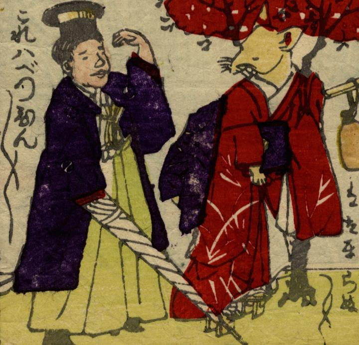

赤い振り袖を着た狐。洋傘を持った男性はこれを見て別嬪別嬪と褒めている。
著作者：深瀬亀次郎／出典：親書誌：U426_nichibunken_0271：しん板ばかされ尽；シンパン バカサレズクシ／日付：2014／資源識別子：U426_nichibunken_0271_0011_0000
Copyright (c)2010- International Research Center for Japanese Studies, Kyoto, Japan. All rights reserved.